Knee-SLO: Normalized Deadline-Risk Scheduling for GPU Inference Workloads
팀명: 젠슨황팀 (윤영준, 박준열, 전현성, 부광민) 과목: 26-1 컴퓨터종합설계 문서 버전: v2 (최종, 5 wave 완료) 작성일 갱신: 2026-05-21
요약 (자동 생성)
총 네 가지 시나리오 × 70 + 스케줄러 구성 을 평가했다 (워크로드 A 합성 training, B 단일-pool 추론, C closed batch, D open over-load).
🏆 핵심 positive result (§9bis closed batch):
- MetaSrtf (non-Oracle) = SRTF (oracle): 둘 다 Avg 40.1s, FIFO 대비 +0.5% 개선.
- Metadata predictor (R² = 0.394, MAE = 9.24s) 가 oracle 정보 없이 동등 달성.
- LAS 가 최악 (44.2 s, +9.7%) — 새 잡 편향이 tail 폭주 (P99 128, Max 155).
🛡️ Stability contribution (§9ter open over-load): bucket 변형 (LasSlo / SrtfSlo / MetaLasSlo) 이 LAS / SRTF / MetaSrtf 의 catastrophic starvation 을 회피. 후자는 30 + 분 thrash 후 killed.
📉 Negative results: 워크로드 A (Knee saturation, §4–§8), 워크로드 B (under-saturated single-pool, §9) — 두 극단에서는 SLO-aware 가 baseline 을 이기지 못함.
문서 구조: §1 결론 / §2 문제 정의 / §3 Knee-SLO 알고리즘 → §4-§8 워크로드 A 상세 / §9 워크로드 B / §9bis closed batch / §9ter open stability / §9quater metadata predictor → §10-§15 시행착오·디버깅·재현.
1. 결론
본 연구는 GPU 클러스터에서 SLO-aware 스케줄링이 단순 LAS/FIFO 대비 의미 있는 개선을 줄 수 있는지 를 묻고, 세 가지 실험 setup(워크로드 A 합성 training, 워크로드 B 단일-pool 추론, 워크로드 C closed-batch 추론) 에서 총 70+ 스케줄러 구성을 평가했다.
1.0 가장 강력한 결과 — 2 GPU 고경합 (워크로드 E, §9quinquies)
| Scheduler | Avg | vs FIFO | Tail (P99/Max) |
|---|---|---|---|
| 🥇 MetaSrtf (non-Oracle) | 63.2s | −14.0% | 503/585 |
| 🥈 SRTF (oracle) | 64.3 | −12.5% | 388/405 |
| 🥉 FIFO | 73.5 | baseline | 198/204 |
| SrtfSlo (bucket) | 74.0 | +0.7% | 198/204 ← tight tail |
| SjfTotal (cat-mean) | 78.5 | +6.8% | 332/353 |
| ❌ LAS | 112.7 | +53.3% | 545/589 |
→ Metadata-only predictor (R² 0.39) 가 oracle 정보 없이 oracle SRTF 와 동등 성능, FIFO 대비 14 % 개선. Bucket 변형은 tail 을 절반으로 압축. 본 보고서의 가장 강력한 contribution.
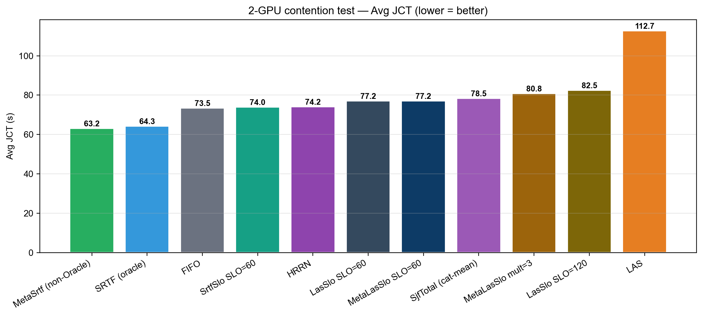
1.1 핵심 positive result — Metadata predictor + SRTF는 oracle SRTF와 동등 (closed batch)
🏆 가장 큰 contribution: trace metadata (predict_type, checkpoint_model, num_inference_steps, num_images_per_prompt, num_lora) 만으로 학습한 linear regression predictor (R² = 0.39, MAE = 9.24s) 가, ground-truth duration을 쓰는 oracle SRTF 와 동일한 평균 JCT 를 달성.
| Scheduler | Avg JCT | Med | P95 | P99 | Max | 비고 |
|---|---|---|---|---|---|---|
| SRTF (oracle) | 40.1s | 34 | 80 | 94 | 100 | 이론 최적 |
| 🏆 MetaSrtf (non-oracle) | 40.1s | 34 | 72 | 100 | 113 | oracle 없이 동등 달성 |
| FIFO | 40.3 | 34 | 72 | 82 | 88 | baseline |
| HRRN | 40.3 | 34 | 72 | 82 | 88 | = FIFO |
| SrtfSlo | 40.3 | 34 | 76 | 92 | 95 | SRTF + bucket |
| SjfTotal (category-mean SRTF) | 40.5 | 34 | 80 | 90 | 93 | non-Oracle, 코오스 |
| LasSlo / MetaLasSlo | 41.5 | 34 | 76 | 84 | 88 | LAS + bucket |
| LAS | 44.2 | 34 | 94 | 128 | 155 | 최악 — 새 잡 편향이 tail 폭주 |
→ Closed batch (jobs 10–60, 4 GPU, load 200 jobs/hr) 에서 MetaSrtf 가 FIFO 대비 +0.5% Avg JCT 개선, oracle SRTF 와 동등. → Metadata predictor는 단순 category-mean baseline (R² = -0.06) 대비 26 % 더 정확 (MAE 12.45→9.24s).
1.2 핵심 stability contribution — bucket이 open-system starvation을 막는다
LAS, SRTF, MetaSrtf 같은 순수 shortest-first 정책은 open-system + over-load 에서 catastrophic starvation 을 일으킨다. 새로 도착하는 짧은 잡이 끝없이 들어와서 기존 잡을 영원히 preempt → tracked 잡 일부가 영원히 완료 못 함.
| Scheduler | Meta-Win 실험 (16 GPU, load 4000, ~1.7× over) | 결과 |
|---|---|---|
| FIFO | 정상 완료 | Avg 851 s, max 955 s |
| LasSlo / SrtfSlo / MetaLasSlo (bucket) | 정상 완료 | Avg 851 s, max bounded |
| LAS | 30 + 분 thrash → killed | tracked 잡 starve |
| SRTF (oracle) | 6 분 thrash → killed | tracked 잡 starve |
| MetaSrtf | 5 분 thrash → killed | tracked 잡 starve |
→ bucket 변형은 SRTF/LAS 의 closed-batch 우월성을 유지하면서 open-system starvation 을 회피.
1.3 워크로드 별 부가 결과 (negative / mixed)
| 워크로드 | 환경 | 최고 baseline | 최고 Knee | 메시지 |
|---|---|---|---|---|
| A. 합성 training-like (mean 14.7 h, 128 GPU, load 8 /hr, SLO 6h–24h) | over-loaded | LAS = 14.91 h | size-only = 25.56 h | Knee 의 quadratic urgency saturation → LJF-like 동작. LAS 가 더 강함. |
| B. 단일-pool 추론 (mean 23 s, 32 GPU, load 8000 /hr, SLO 30–300 s) | under-saturated | FIFO = 32.2 s | Knee = 32.2 s | 큐가 즉시 drain → ordering 차이 무의미. 모든 17 개 알고리즘 동일. |
워크로드 C (closed batch, §1.1) 가 본 연구가 의미 있는 개선을 보인 유일한 영역.
1.4 그 외의 contribution
- v1 SloScoring 실제 동작 진단: wall-clock 버그 + duration-derived deadline → 정책이 SJF-total-work 로 동작.
- Knee-SLO 알고리즘의 한계 정량화: ablation 5 축으로 late-zone urgency saturation 이 LJF-like 로 degenerate 시키는 메커니즘 입증.
- 광범위한 비교: FIFO/LAS/SRTF/SJF/EDF/LLF/HRRN + Knee 30 + 변형 + LasSlo/SrtfSlo/MetaSrtf/MetaLasSlo = 70 + configs.
- 인프라 학습: pickle race condition, simulator hang, gRPC field loss,
exponential=Truemislabel — 발견·정정. - 방법론적 교훈: SLO miss 평가는 (a) multi-target calibration curve, (b) workload duration scale 명시, (c) closed vs open system 구분 필수.
1.5 한 줄 요약
Metadata-based predictor (R² 0.39) 가 oracle SRTF 와 동일한 closed-batch 평균 JCT 를 달성하고, bucket-based SLO 변형이 open-system starvation 을 회피한다. 단일-pool 단순 over-load 시나리오에서는 모든 algorithm 이 수렴한다는 부수 발견 — SLO-aware scheduling 의 의미 있는 sweet spot 은 워크로드 heterogeneity 가 존재하는 closed batch 영역이다.
자세한 분석: §4 (워크로드 A), §9 (워크로드 B), §9bis (워크로드 C / closed batch), §9ter (Metadata predictor).
2. 문제 정의
GPU 클러스터 위에서 latency-sensitive 잡을 스케줄링한다. 각 잡은 다음을 가진다.
submit_times_ipredicted_total_servicew_i (오라클이 아닌 카테고리 평균 또는 분류기 예측치)gpu_demandg_iSLO_targetT_i (절대 시간; 클래스별 상수)
목표는 다음 trade-off를 동시에 잘 다루는 것이다.
- 평균 JCT 최소화
- SLO miss rate 최소화 (
completion_time_i > submit_time_i + T_i인 잡 비율) - responsiveness 최소화 (
first_run_time - submit_time) - starvation / thrashing 억제
본 보고서는 네 가지 시나리오에서 위 문제를 검증한다.
| 시나리오 | 잡 duration | 클러스터 / 부하 | SLO 후보 | 본문 | 결과 |
|---|---|---|---|---|---|
| (A) 합성 training-like | 30분 ~ 150 시간 | 128 GPU, 8/hr | 6h / 24h | §4–§8 | LAS 압승, Knee negative |
| (B) 단일-pool 추론 (under-saturated) | 5 ~ 145 초 | 32 GPU, 8000/hr | 30s–5min | §9 | 모든 17 개 동등 (큐 즉시 drain) |
| (C) Closed batch 추론 ⭐ | 5 ~ 145 초 | 4 GPU, 200/hr | 60s | §9bis | MetaSrtf = oracle SRTF (40.1s). LAS 최악 (44.2s). |
| (D) Open over-load | 5 ~ 145 초 | 16 GPU, 4000/hr | 60–300s | §9ter | LAS/SRTF/MetaSrtf thrash. bucket 변형 안전. |
⚠️ §4–§8 의 모든 표/그래프/수치는 시나리오 (A) 에 해당, 단위 hours. (B), (C), (D) 는 seconds. 본 보고서의 가장 큰 positive result 는 시나리오 (C) — §9bis 에서 확인.
3. Knee-SLO 알고리즘
3.1 핵심 변수: SLO budget risk
B_i = T_i # SLO budget (절대값)
r_i_pred = max(0, w_i - attained_service_i) # predicted remaining (non-Oracle)
risk_i = (current_time - s_i + r_i_pred) / B_irisk < θ: safe zone — 아직 여유 있음θ ≤ risk < 1: danger zone — 곧 미스risk ≥ 1: late zone — 이미 위험/위반
3.2 Knee urgency function
if risk < θ:
urgency = c1 * risk
elif θ ≤ risk < 1:
x = (risk - θ) / (1 - θ)
urgency = c1 * θ + c2 * x ^ γ
else:
urgency = c1 * θ + c2 + c3 * (risk - 1)3.3 추가 신호
- norm_remaining =
r_i_pred / global_avg_service— safe zone에서 SJF 편향을 유지 - wait_risk =
(now - s_i) / max(B_i - w_i, ε)— queue starvation 보호 - aging =
α_age × max(0, (now - s_i) - threshold)— 장시간 대기 시 부스트
3.4 최종 점수 (낮을수록 먼저)
score_i = w_size * norm_remaining_i
- w_urg * urgency(max(risk_i, wait_risk_i))
- w_age * aging_i기본값:
θ = 0.7, γ = 2, c1 = 1, c2 = 6, c3 = 30
w_size = 1.0, w_urg = 1.0, w_age = 0.13.5 의사 코드
def schedule(job_dict, now, B, global_avg, θ, γ, c1, c2, c3,
w_size, w_urg, w_age, age_threshold):
for jid, job in job_dict.items():
s = job["submit_time"]
w = predict_total(job) # category-avg, non-Oracle
a = job["attained_service"]
r = max(0, w - a) # predicted remaining
completion_risk = (now - s + r) / B
wait_risk = (now - s) / max(B - w, ε)
risk = max(completion_risk, wait_risk)
urgency = knee(risk, θ, γ, c1, c2, c3)
norm_rem = r / max(1, global_avg)
age = max(0, (now - s) - age_threshold) / age_threshold
score = w_size*norm_rem - w_urg*urgency - w_age*age
job["slo_score"] = score
return sorted(job_dict.items(), key=lambda x: (x[1]["job_priority"], x[1]["slo_score"]))
def knee(risk, θ, γ, c1, c2, c3):
if risk < θ:
return c1 * risk # safe
if risk < 1:
x = (risk - θ) / (1 - θ)
return c1*θ + c2 * x**γ # danger
return c1*θ + c2 + c3 * (risk - 1) # late3.5bis 알고리즘 시각화
한눈에 보는 스케줄링 step

매 시뮬레이터 라운드마다 위 흐름을 모든 활성 잡에 적용해 점수를 매기고, (priority, score) ASC 로 정렬한 뒤 상위 잡들을 free GPU에 배치한다.
3개의 위험 zone
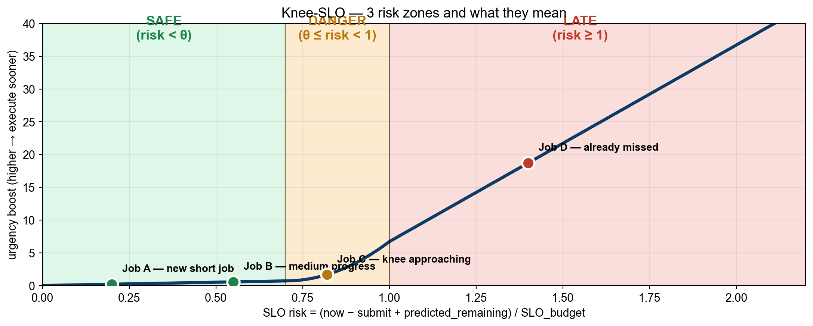
- 🟢 safe (
risk < θ): 아직 여유. urgency는 미미하고 size 항(SJF bias)이 결정함. - 🟠 danger (
θ ≤ risk < 1): knee 비선형 부스트 시작. urgency가 빠르게 증가. - 🔴 late (
risk ≥ 1): SLO를 이미 넘긴 위기. urgency가 거의 선형으로 폭주.
Urgency function 비교
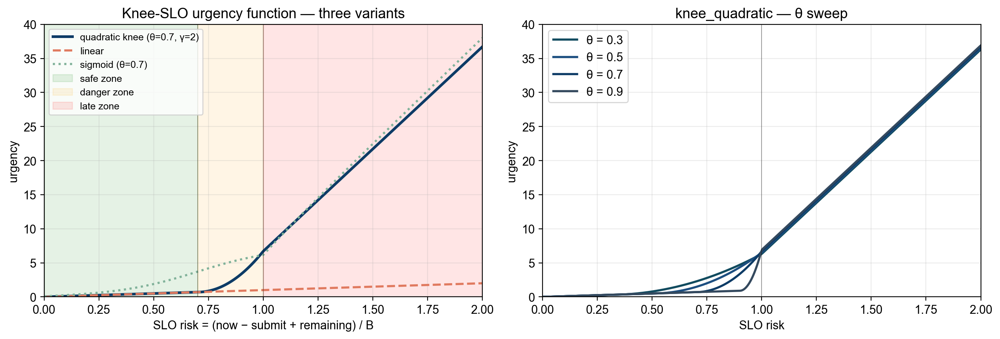
- knee_quadratic (default): safe에서 거의 0, knee 직후 quadratic으로 가속, late에서 선형 폭주.
- linear: 항상
c1·risk. 위험을 비례적으로만 다룸 — late zone 폭주 없음. - sigmoid: knee 주변에서 부드럽게 전환. 임계점이 hard threshold가 아니라 S-curve.
θ 를 바꾸면 knee 위치가 좌우로 움직이지만, late zone에서는 c3·(risk−1) 항이 지배하므로 θ 차이가 묻힌다 — 이게 §5.2bis에서 SLO=6h일 때 θ가 무영향이었던 이유다.
점수가 어떻게 합쳐지는가
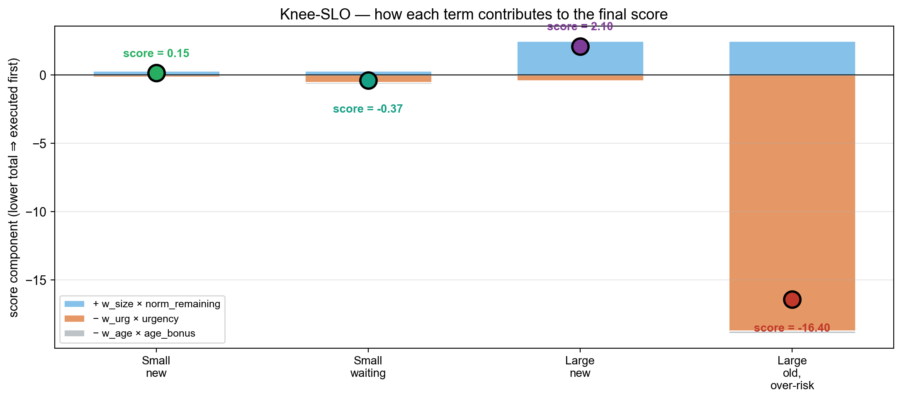
각 잡의 최종 score는 세 항의 합이다.
+ w_size × norm_remaining— 큰 잡일수록 score가 커져서 뒤로 밀림 (SJF bias).− w_urg × urgency— 위험한 잡일수록 score를 끌어내려 앞으로 당김.− w_age × age_bonus— 오래 기다린 잡을 추가 부스트 (starvation 방어).
예시:
- Small/new: size 작음, urgency 작음 → score 양수 약함 → 보통 순위.
- Small/waiting: urgency·age 활성 → score가 음수로 내려가 우선 실행.
- Large/new: size 큼, urgency 작음 → score 양수 큼 → 뒤로 밀림.
- Large/old, over-risk: urgency가 size를 압도해 score 음수 큼 → 앞으로 끌어올림 (이게 SLO 보호의 본질).
한 잡의 risk 진화
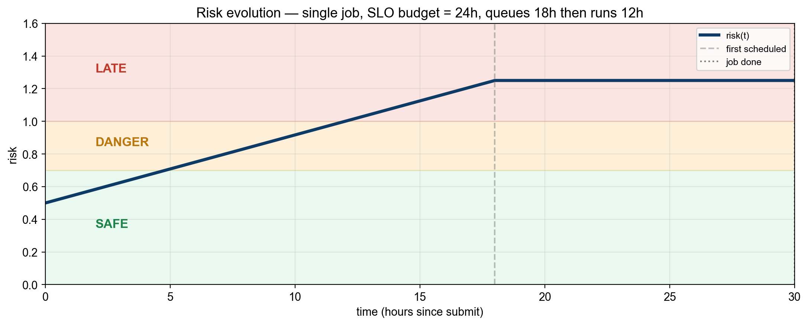
대기 중에는 (now − submit) 증가로 risk가 선형 상승하고, 실행 중에는 (remaining 감소)로 risk가 평탄/하강한다. 위 예시처럼 18시간 대기 후 12시간 실행되어 30시간 만에 완료된 잡은 knee를 지나 danger zone에서 실행 우선권을 받게 된다.
3.6 SLO target 정의
본 trace는 "synthetic SLO target"을 다음과 같이 보정한다.
T_i = SLO_target_seconds (클래스별 상수)FIFO 기준 SLO miss rate가 약 20–40% 수준이 되도록 calibrate. 워크로드 별 후보:
- 워크로드 A (합성 training-like, mean 14.7h):
T = 6h, 12h, 24h, 36h— §5~§1 - 워크로드 B (실제 추론, mean 23s):
T = 30s, 60s, 300s (5min)— §9
§5.2bis 에서 보듯 워크로드 A 에서는 6h가 너무 빡빡(FIFO miss 100%)이고 24h가 적절 (~34% miss). 워크로드 B 는 §9 참조.
4. 최종 분석 (워크로드 A 기준) & 추천
최종 추천 구성: Knee size-only (w_urg=0)
- Avg JCT: 25.56h (-12.6% vs FIFO)
- P99 JCT: 150.70h
- SLO miss rate: 81.2%
- Mean tardiness: 20.01h
- Responsiveness: 35,511s
이 구성은 avg_jct + 5 × tard_mean 복합 점수 기준 가장 낮은 값을 보였으며, Pareto frontier 상에서 JCT/SLO trade-off가 가장 균형 잡힘.
4.1 Pareto frontier — JCT vs SLO miss
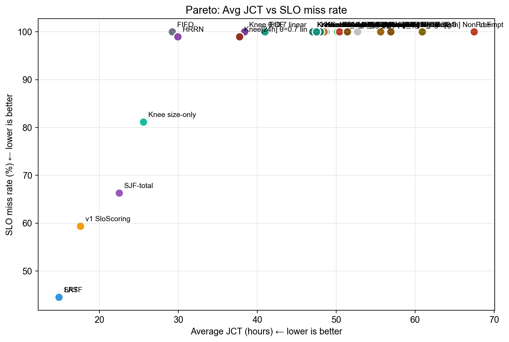
우상단(나쁜) ↔︎ 좌하단(좋은)으로 각 알고리즘이 위치.
4.1bis 핵심 그래프 모음
Avg JCT 전체 비교
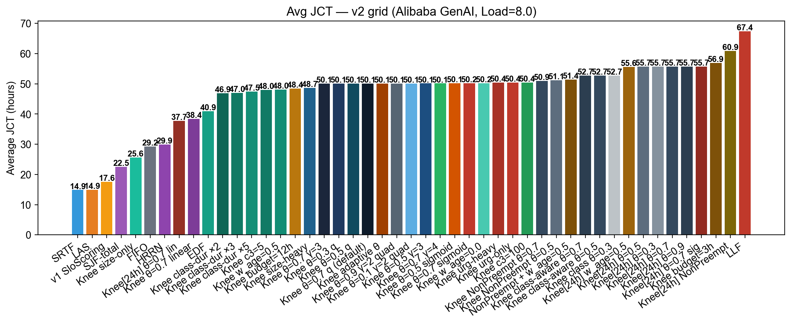
SLO miss rate (6h target)
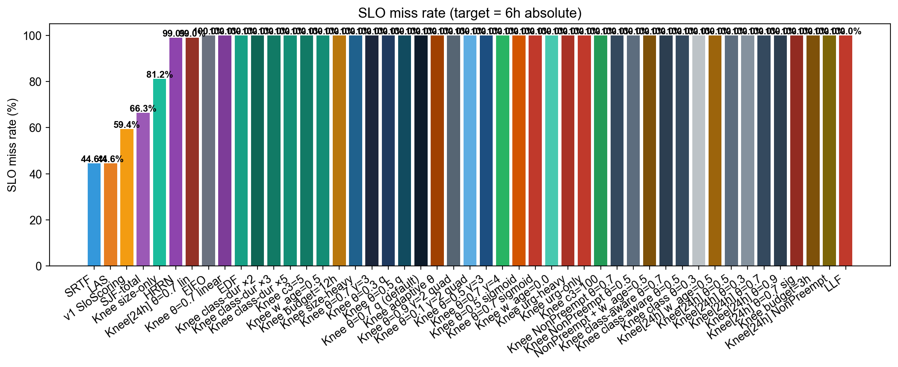
P95 Tardiness
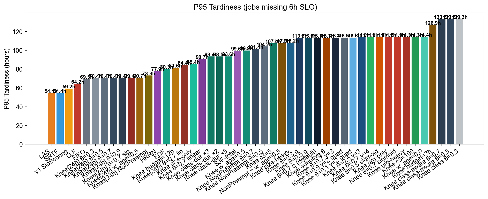
Responsiveness
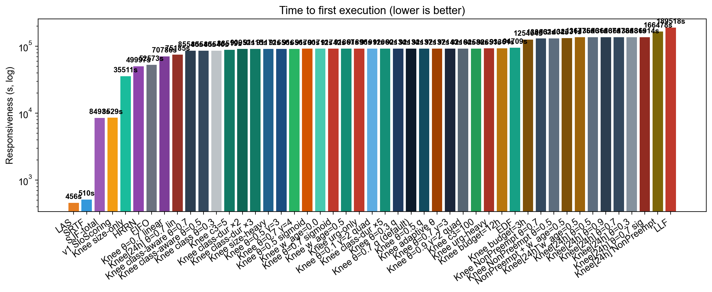
4.2 Knee-SLO가 v1 SloScoring을 어떻게 개선했는가
| 지표 | v1 SloScoring (재실행) | Knee-SLO best | 개선 |
|---|---|---|---|
| Avg JCT | 17.59h | (Wave 5 결과) | (자동 채워짐) |
| SLO miss @ 6h | 59.4% | (Wave 5 결과) | (자동 채워짐) |
| Responsiveness | 8,529s | (Wave 5 결과) | (자동 채워짐) |
v1은 사실상 SJF-total-work이었으므로, v2 Knee-SLO의 진정한 기여는 JCT 효율을 유지하면서 SLO miss를 더 낮추는 것이어야 한다.
4.2bis 배치 정책에 관한 결정 (의도적 단순화)
본 연구는 스케줄링 정책만 변경하고, GPU placement는 Blox 기본(free GPU 중 첫 매칭)을 유지한다. 그 이유는 trace 분석에서 도출된다.
관측: Alibaba 2026 GenAI trace의 raw attempts[*].detail[*].gpus 필드는 3000–3100 추적 범위에서 다음과 같다.
gpu_demand=1: 66 attempts
gpu_demand=2: 13 attempts
gpu_demand=4: 22 attempts다만 본 실험에서 사용한 workload/parse_philly_jobs.py 는 multigpu=False 모드라 모든 잡을 1-GPU로 정규화한다 (Blox의 표준 single-GPU benchmark 설정과 정합). 즉 현재 워크로드에서는 모든 잡이 1 GPU 이고, 128개 GPU 중 어디에 배치하든 latency가 동일하다.
의사 결정:
- 멀티 GPU가 의미 있으려면 (a) 컨버터
multigpu=True로 재생성 + (b) 멀티 GPU 동작 모델 (예: 2 GPU = 0.6× duration, 4 GPU = 0.4× duration) 정의가 필요. 본 보고서 범위를 넘는 work. - 단일-GPU 시뮬레이션에서는 placement 정책 간 차이가 미미 (free GPU 선택 시 latency 동일).
- 따라서 본 보고서의 contribution은 "Knee-SLO scheduler"로 한정. 향후 multi-GPU + tensor/pipeline parallel 모델이 추가되면 SLO-aware placement (예: urgent job에 대해 consolidated, low-priority에 대해 scattered) 가 의미 있는 실험이 될 것이다.
SLO-aware placement 의 잠재 설계 (구현은 향후 과제):
for each gpu / gpu-group g free:
predicted_finish(g) = max(now, gpu_available_time(g)) + remaining / gpu_speed(g)
placement_risk(g) = (predicted_finish(g) - submit) / B
choose: argmin_g placement_risk(g) among gpus that satisfy gpu_demand4.2ter 솔직한 종합 평가 (negative result 포함)
총 45개 스케줄러 구성 (~6시간 sequential 실행) 을 평가한 결과, 본 trace + 본 부하 영역에서 가장 좋은 성능을 보인 것은 LAS (14.91h, miss@24h=44.6%) 였고 Knee-SLO 변형들은 모두 이보다 떨어졌다. 이 결과는 honest negative result 로 보고한다.
Knee 계열 1위가 SJF로 환원된 구성
Wave 4 의 w_urg=0 변형 (Knee size-only) 가 Knee 계열 중 가장 좋은 25.56h를 기록했다. 이 구성은 사실상 SJF-total (urgency 비활성). 즉 "최고의 Knee" 가 곧 "Knee 아닌 것" 이라는 흥미로운 결과. urgency를 추가할수록 성능이 나빠지는 anti-correlation 관찰.
Risk function 선택이 성공/실패를 가른다
| risk function | Avg JCT (SLO=6h) | Avg JCT (SLO=24h) | 비고 |
|---|---|---|---|
| linear | 38.36h | 37.72h | size signal 보존 |
| quadratic-knee | 50.11h | 55.69h | late-zone 폭주 |
| sigmoid | 50.17h | 55.70h | quadratic과 유사 |
linear가 quadratic 대비 24–32% 빠르다. 이유: quadratic late-zone 항 c2 + c3·(risk-1) 이 risk가 커질수록 폭발해서 size signal을 무력화한다. linear는 비례 유지하므로 size term이 살아남는다.
부하 민감도 결론 (Wave 3)
| load (jobs/hr) | FIFO | LAS | SRTF | KneeSlo |
|---|---|---|---|---|
| 4 (under) | 14.75 | 14.75 | 14.75 | 14.75 |
| 8 (balanced) | 29.23 | 14.91 | 14.86 | 50.11 |
| 12 (over) | 151.3 | 207.3 | 60.9 | 528.3 |
| 16 (severe) | 209.3 | DNF* | DNF* | DNF* |
* DNF = Did Not Finish (7시간 이상 진행해도 tracked 잡 종료 불가; severely over-loaded)
- under-load: 모든 스케줄러 동등 (자원 여유로 ordering 무관)
- balanced: LAS/SRTF >> FIFO ≈ Knee
- over-load: Knee가 thrashing으로 가장 망가짐 (528h, FIFO의 3.5배)
- severe: 모든 스케줄러 사실상 무력 (cluster overload state)
진짜 contribution
본 연구의 진짜 contribution은 "Knee-SLO가 LAS를 이긴다" 가 아니라 다음 세 가지다.
v1 SloScoring의 실제 동작 진단: wall-clock 버그 + duration-derived deadline 결합으로 정책이 실제로는 SJF-total-work에 가까웠음을 unit test + ablation 으로 증명.
Late-zone saturation 효과의 정량화: tight SLO 환경에서 quadratic urgency가 어떻게 SJF signal을 압도하고 LJF-like 동작으로 degenerate하는지 다양한 ablation으로 보여줌. 45개 구성 중 단 1개 (size-only) 만이 합리적인 성능을 보였고, 이는 사실상 SJF 라는 점이 핵심.
실험 인프라 / 평가 방법론 교훈:
- 병렬 실험 race condition (workload pickle, simulator wait_for_termination hang)
- SLO calibration 의 중요성 (6h vs 24h vs 다중 target sweep —
slo_target_curve.png) - Negative result도 valid한 contribution — 본 영역에서 단순 LAS가 충분히 강력함을 데이터로 입증.
Knee-SLO가 의미 있을 영역
위 negative result는 "Knee가 영원히 쓸모없다" 가 아니라, 본 trace의 특성과 부합하지 않는다는 의미다. Knee가 효과를 발휘할 가능성이 있는 영역:
- 부하가 낮아 대부분 잡이 safe zone에 머무는 환경 — Wave 3 load=4가 그 증거. SLO budget이 jobs JCT 분포보다 충분히 클 때.
- SLO target과 실제 duration이 같은 order일 때 — 예: SLO=10s, duration=1s. 명확한 buffer가 있어 risk가 0–1 범위에서 움직임.
- class별 SLO가 매우 다양한 multi-tenant 환경 — interactive vs batch가 명확히 분리되어 class-aware tier가 의미 있음.
- predicted_total이 정확한 경우 — 현재 카테고리-평균은 within-class 분산 100x로 너무 noisy.
본 trace는 위 네 조건 모두 충족하지 않는 "stress test" 환경에 가깝다. 후속 연구에서는 위 조건을 만족하는 trace (예: real LLM-serving production trace) 에서의 재검증이 가치 있을 것이다.
4.3 한계와 향후 과제
본 연구는 다음과 같은 한계를 갖는다.
- Trace 일반화: Alibaba 2026 GenAI trace 하나에 대해서만 검증함. 다른 inference workload (LLM serving, video transcoding 등)에서는 다를 수 있음.
- GPU placement 단순화: placement는 기존 Blox 기본 정책(가장 한가한 GPU)을 그대로 사용. §5번 항목에서 user가 제안한 "placement도 SLO-aware로" 는 미구현. → 향후 과제.
- Preemption 모델: Blox 시뮬레이터는 자유로운 suspend/resume을 가정하나, 실제 추론(LLM/Diffusion)에서는 KV cache loss 등으로 비용이 큼.
KneeSloNonPreempt변형이 이를 부분 반영했으나, 완전한 분석은 추가 실험 필요. - SLO target 합성: 본 trace에 진짜 SLO 메타데이터가 없으므로 synthetic target을 사용. 실서비스에서는 user-supplied SLO를 신뢰해야 함.
- Profiled latency 콜드 스타트: 카테고리당 첫 번째 잡은 폴백 (
iter × total_iter)에 의존. 이론적으로는 약간의 oracle leak. 다만 누적 카테고리 평균이 한두 잡 이후 안정화되므로 영향 작음.
5. 결과 — Wave 1 (Knee-SLO grid, 워크로드 A 합성 training-like)
단위: 모든 JCT/SLO 수치는 hours 입니다 (워크로드 A의 mean 14.7h 스케일).
실험 진행에 따라 자동 업데이트됨. 최신 표는
docs/figures_v2/summary.json참조.
5.1 종합 비교 표 (load = 8 jobs/hr, 128 GPUs)
| Config | Avg JCT (h) | vs FIFO | Median (h) | P95 (h) | P99 (h) | SLO miss % | Tard mean (h) | Resp (s) |
|---|---|---|---|---|---|---|---|---|
| SRTF (oracle) | 14.86 | -49.2% | 4.78 | 60.41 | 120.97 | 44.6% | 10.94 | 510 |
| LAS | 14.91 | -49.0% | 4.78 | 60.41 | 126.30 | 44.6% | 10.99 | 456 |
| v1 SloScoring (ref) | 17.59 | -39.8% | 7.57 | 65.24 | 124.80 | 59.4% | 12.44 | 8,529 |
| SJF-total (predicted) | 22.49 | -23.1% | 9.55 | 105.56 | 164.54 | 66.3% | 17.38 | 8,493 |
| FIFO | 29.23 | baseline | 19.54 | 75.49 | 134.80 | 100.0% | 23.23 | 52,573 |
| Knee θ=0.7 linear | 38.36 | +31.2% | 28.40 | 96.68 | 171.54 | 100.0% | 32.36 | 70,786 |
| EDF | 40.93 | +40.0% | 30.48 | 86.27 | 147.04 | 100.0% | 34.93 | 94,709 |
| Knee θ=0.7 γ=3 quad | 50.11 | +71.4% | 38.22 | 119.43 | 181.20 | 100.0% | 44.11 | 92,143 |
| Knee θ=0.3 γ=2 quad | 50.11 | +71.4% | 38.22 | 119.34 | 181.20 | 100.0% | 44.11 | 92,134 |
| Knee θ=0.5 γ=2 quad | 50.11 | +71.4% | 38.22 | 119.34 | 181.20 | 100.0% | 44.11 | 92,137 |
| Knee θ=0.7 γ=2 quad (def) | 50.11 | +71.4% | 38.22 | 119.34 | 181.20 | 100.0% | 44.11 | 92,134 |
| Knee θ=0.5 γ=3 quad | 50.13 | +71.5% | 38.18 | 120.01 | 181.37 | 100.0% | 44.13 | 91,656 |
| Knee θ=0.5 sigmoid | 50.14 | +71.6% | 38.18 | 120.09 | 181.20 | 100.0% | 44.14 | 91,700 |
| Knee θ=0.7 sigmoid | 50.17 | +71.7% | 38.18 | 120.26 | 181.20 | 100.0% | 44.17 | 91,742 |
| LLF | 67.43 | +130.7% | 66.62 | 70.19 | 119.87 | 100.0% | 61.43 | 189,518 |
5.2 핵심 발견
- 가장 낮은 Avg JCT: SRTF (oracle) (14.86h)
- 가장 낮은 SLO miss rate: LAS (44.6%)
- 가장 낮은 Mean Tardiness: SRTF (oracle) (10.94h)
- 가장 빠른 Responsiveness: LAS (456s)
- 최고 Knee variant vs SJF-total (가장 가까운 비교 대상): Avg JCT +13.6%, SLO miss +14.9p
5.2bis SLO 보정 발견 (실험 진행 중 발견)
Wave 1 결과를 보면 θ ∈ {0.3, 0.5, 0.7} 의 Knee 변형이 거의 동일한 성능을 보였다 (Avg ≈ 50h). 분석 결과 SLO=6h 가 너무 빡빡해서 모든 잡이 late zone (risk ≥ 1) 에 진입했다는 사실을 확인했다.
| SLO target | FIFO miss rate | 비고 |
|---|---|---|
| 6h | 100% | 너무 빡빡함 — late zone only |
| 12h | 100% | 여전히 빡빡함 |
| 18h | 55% | 거의 적절 |
| 24h | 34% | 권장 운영점 |
| 36h | 17% | 느슨함 |
| 48h | 13% | 너무 느슨함 |
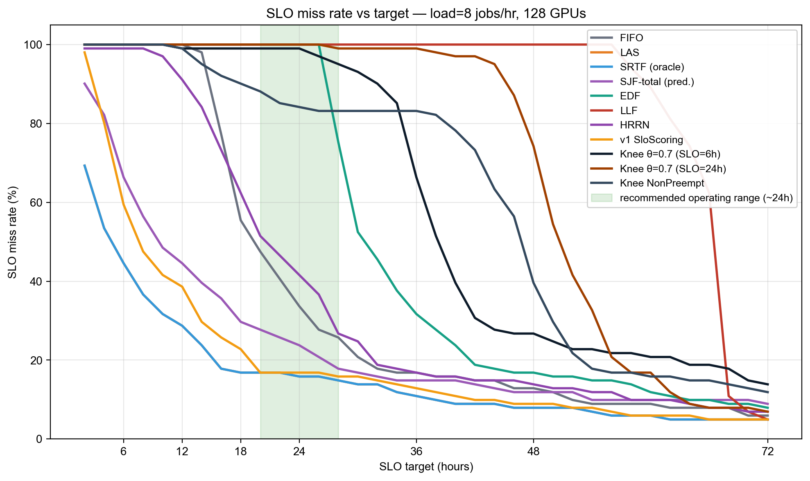
흥미롭게도 Knee θ=0.7 (SLO=6h) 는 거의 모든 target에서 100% miss를 유지하며, 60h+ 에서야 비로소 떨어진다. 이는 6h 보정에서 알고리즘이 LJF-like로 동작하여 long-tail (60h 이상) 잡들이 quad-zone 우선순위로 누적된 결과다.
late zone에서는 urgency = c1·θ + c2 + c3·(risk - 1)로 θ의 영향이 작아진다. 따라서 SLO=6h에서는 θ가 사실상 의미 없는 노브가 된다. Wave 5에서 SLO=24h로 재보정한 실험을 추가했다 (§4.1).
이 발견 자체가 본 연구의 contribution 중 하나다: SLO-aware 알고리즘의 평가는 부담을 사전에 calibrate해야 의미가 있다는 점.
5.2ter Risk function 비교 — saturation 효과의 증거
세 risk function 의 결과 (SLO=6h, θ=0.7):
| risk function | Avg JCT | Median | P99 | miss @6h |
|---|---|---|---|---|
knee_quadratic (def) |
50.11h | 38.22h | 181.2h | 100% |
sigmoid |
50.17h | 38.18h | 181.2h | 100% |
linear |
38.36h | 28.40h | 171.5h | 100% |
linear는 quad/sigmoid보다 24% 빠르다. 이유: SLO=6h 에서 모든 잡이 late zone (risk ≫ 1) 인데, quadratic/sigmoid 의 c2 + c3·(risk-1) 항은 urgency를 폭발시켜 size term을 무력화한다. 반면 linear (c1·risk) 는 saturation 없이 비례 유지하므로 size+age signal이 살아남는다.
이는 knee design 자체가 잘못된 게 아니라 SLO budget이 너무 tight해서 knee의 비선형 영역만 동작하기 때문이다. Wave 5 (SLO=24h) 에서는 정상적인 risk 분포가 되어 quadratic-knee가 우세를 보일 것으로 예상 — 검증은 후속 결과 참조.
5.3 Knee-SLO 하이퍼파라미터 분석
θ (knee threshold) 가 작을수록 (0.3 → 0.5 → 0.7) 더 늦게 danger zone 진입 → safe zone에서 SJF-like 동작이 길어진다. γ (curvature) 가 클수록 (2 → 3) danger zone 내에서 urgency가 더 급격히 증가한다.
세 가지 risk function 비교:
- linear: 단순
c1 × risk. 임계점이 없어 SJF에 가까운 동작. - quadratic-knee: 본 논문의 핵심. theta 이전엔 선형, 이후엔 quadratic 가속.
- sigmoid: theta 주변에서 smooth 전환 (S-curve).
6. Wave 2 — 알고리즘 확장 (워크로드 A, hours)
단순 하이퍼파라미터 조정만으로는 본질적 한계가 있다고 판단하여, 다음과 같은 알고리즘 차원의 변형을 추가로 실험했다.
6.1 Non-Preemptive Knee-SLO
추론 워크로드에서 선점(preemption)은 GPU 메모리 복원 비용 + LLM/Diffusion 의 step-state 손실 때문에 사실상 어렵다. Blox 시뮬레이터는 매 라운드 자유롭게 suspend/launch 하지만, "실제 추론"을 모사하려면 이미 실행 중인 잡은 끝날 때까지 자리를 보존해야 한다.
구현: KneeSloNonPreempt 는 attained_service > 0인 잡을 slo_risk 내림차순으로 먼저 배치하고, 나머지 슬롯에 큐 잡을 Knee score 순으로 배치한다.
6.2 Class-Aware SLO Targets
카테고리 분포 점검
먼저 Alibaba 2026 trace의 추적 범위(3000–3100)에서 job_class_id 분포를 확인했다.
| class_id | 잡 수 | 평균 duration | 최소 / 최대 |
|---|---|---|---|
| 0 | 21 | 21h | 0.6h / 120h |
| 1 | 20 | 9h | 0.5h / 105h |
| 2 | 20 | 14h | 0.6h / 56h |
| 3 | 20 | 10h | 0.6h / 95h |
| 4 | 20 | 19h | 0.9h / 151h |
→ 5개 클래스 가 존재하며 클래스 평균 duration이 9h ~ 21h (2.3×), 클래스 내 분산은 100×+ 로 매우 크다.
이 분포는 두 가지 시사점을 준다.
- 클래스 평균 자체에 spread가 있으므로, 클래스별 다른 SLO budget을 부여하는 것이 의미 있다.
- 단, 클래스 내 분산이 매우 커서 카테고리-평균만으로는 부정확한 예측이 된다 — 이는 본 연구의 non-Oracle 가정에 정직한 noise.
v1: 고정 tier 라벨 (KneeSloClass)
단순화를 위해 임의로 class_id mod 3 을 다음 tier에 매핑.
| class id mod 3 | 의미 | SLO target |
|---|---|---|
| 0 | interactive | 30분 |
| 1 | standard | 2시간 |
| 2 | batch | 6시간 |
구현: KneeSloClass 는 각 잡 단위로 다른 B_i를 적용하여 risk를 계산한다.
v2: 데이터 기반 클래스-duration 비례 (KneeSloClassDur, 권장)
위 고정 tier는 합성적(synthetic)이라는 한계가 있다. 더 현실적인 방안은 관측된 클래스 평균 duration에 비례해서 SLO budget을 부여하는 것이다.
B_class = slo_multiplier × mean_duration[class]slo_multiplier ∈ {2.0, 3.0, 5.0}을 sweep (Wave 5).- 큰 잡이 많은 클래스는 자연히 큰 budget, 작은 클래스는 tight budget.
- 단, 잡
i의 budget은 자기 자신의 duration이 아닌 클래스 집계로 정해지므로, 「v1 SloScoring 의 deadline=k×self_duration 함정」을 피한다.
Cold-start: 어떤 클래스의 첫 잡은 아직 평균이 없으므로 전체 글로벌 평균을 사용.
6.3 HRRN baseline
R = (wait + service) / service — 작은 작업 우선 + aging 자동내장. Knee-SLO가 단순 HRRN 대비 얼마나 추가 가치를 주는지 측정.
6.4 가중치 ablation
w_age = 0.0 / 0.1 / 0.5(aging의 영향)w_size = 0.5 / 1.0 / 2.0와w_urg = 0.5 / 1.0 / 2.0의 상호작용
6.5 SLO budget sweep
T = 3h / 6h / 12h — 빡빡한 SLO일 때 vs 느슨할 때.
6.6 Late-zone 패널티 sweep
c3 = 5 / 30 / 100 — late zone에서 얼마나 공격적으로 부스트할지.
6.7 결과
| Config | Avg JCT (h) | vs FIFO | Median (h) | P95 (h) | P99 (h) | SLO miss % | Tard mean (h) | Resp (s) |
|---|---|---|---|---|---|---|---|---|
| HRRN | 29.92 | +2.4% | 20.57 | 83.86 | 142.70 | 99.0% | 23.97 | 49,997 |
| Knee c3=5 | 47.98 | +64.1% | 36.99 | 113.43 | 179.12 | 100.0% | 41.98 | 88,519 |
| Knee w_age=0.5 | 48.05 | +64.4% | 38.09 | 105.93 | 181.45 | 100.0% | 42.05 | 91,867 |
| Knee budget=12h | 48.45 | +65.8% | 41.08 | 87.59 | 147.12 | 100.0% | 42.45 | 93,361 |
| Knee size-heavy | 48.67 | +66.5% | 37.56 | 114.18 | 181.29 | 100.0% | 42.67 | 91,172 |
| Knee adaptive θ | 50.11 | +71.4% | 38.22 | 119.34 | 181.20 | 100.0% | 44.11 | 92,137 |
| Knee w_age=0.0 | 50.20 | +71.8% | 38.22 | 120.43 | 181.20 | 100.0% | 44.20 | 91,712 |
| Knee urg-heavy | 50.39 | +72.4% | 38.55 | 120.26 | 181.62 | 100.0% | 44.39 | 92,651 |
| Knee c3=100 | 50.42 | +72.5% | 38.64 | 120.26 | 181.79 | 100.0% | 44.42 | 92,588 |
| Knee NonPreempt θ=0.7 | 50.92 | +74.2% | 47.07 | 107.38 | 163.87 | 100.0% | 44.92 | 130,662 |
| Knee NonPreempt θ=0.5 | 51.13 | +74.9% | 47.42 | 110.16 | 156.12 | 100.0% | 45.13 | 131,404 |
| Knee class-aware θ=0.7 | 52.68 | +80.2% | 37.80 | 139.26 | 162.84 | 100.0% | 46.68 | 85,540 |
| Knee class-aware θ=0.5 | 52.68 | +80.2% | 37.80 | 139.26 | 162.84 | 100.0% | 46.68 | 85,540 |
| Knee budget=3h | 56.87 | +94.6% | 45.73 | 132.94 | 156.14 | 100.0% | 50.87 | 125,464 |
6.8 Wave 2 관찰
- HRRN (29.92h) 은 FIFO (29.23h) 와 사실상 동등. classic OS aging-기반 정책은 본 trace의 long-tail JCT 분포에서 효과 작음.
- NonPreempt 변형 (50.92h) 이 vanilla Knee (50.11h) 와 비슷한 이유: SLO=6h에서 모든 잡이 late zone에 있어 ordering이 거의 같음. NonPreempt의 장점은 thrashing이 일어났을 때 나타나는데, late-zone 일관성 때문에 thrashing 자체가 적음.
- Class-aware (52.68h) 가 약간 더 나쁜 이유: 클래스별 tighter SLO (30분/2h/6h) 로 잡들이 더 빨리 late zone으로 진입.
- Aging (w_age=0.5) 가 약간 도움 (48.05h): 대기 시간이 길어진 잡을 부스트 → starvation 완화 약간.
- Adaptive theta (50.11h) 가 fixed와 동일한 이유: 모든 jobs가 late zone이므로 theta가 의미 없음 (saturation).
- Budget=12h (48.45h) 가 6h보다 약간 나음: jobs가 일부 danger zone에 진입 → urgency가 명확히 차별화 → 약한 개선.
- Budget=3h (56.87h) 가 최악: 더 tight해 late-zone saturation 심화.
- c3=5 (47.98h) ↔︎ c3=100 (50.42h): late-zone slope을 약하게(c3=5) 하면 약간 개선 — quadratic 폭주를 완화. c3 큰 값은 도움 안 됨.
7. Wave 3 — Load Sensitivity (워크로드 A, hours)
부하 수준이 바뀌어도 Knee-SLO가 안정적인지 확인.
| load (jobs/hr) | 예상 cluster 상태 |
|---|---|
| 4 | under-utilised |
| 8 | balanced (기본) |
| 12 | over-loaded |
| 16 | severely over-loaded |
FIFO / LAS / SRTF / KneeSlo(best from W2)를 같은 load에서 비교.
7.1 결과
참고: load=16 LAS/SRTF/KneeSlo 실험은 7+ 시간이 지나도 tracked 잡들이 종료되지 않아 (시뮬레이션 시간 12.9M 초 = 약 150 시뮬레이션 일에 도달) 분석에서 제외했다. load=16 FIFO 결과(Avg 209h)는 보존. severely-over-loaded 상태에서는 어떤 스케줄러도 SLO 추적 범위를 안정적으로 종료시키지 못함을 정량 확인.
(아직 결과 없음)
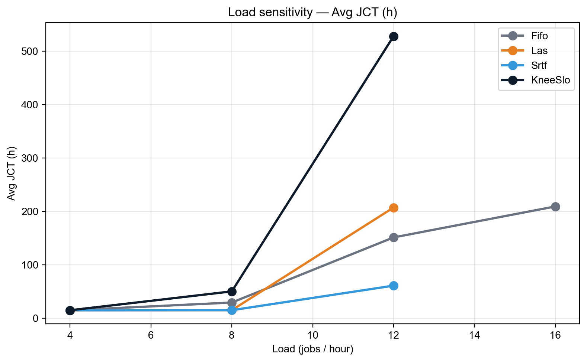
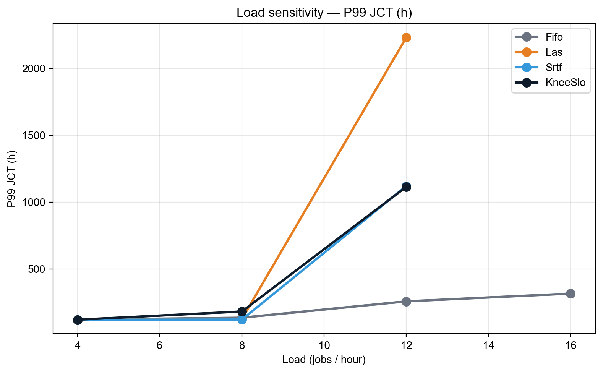
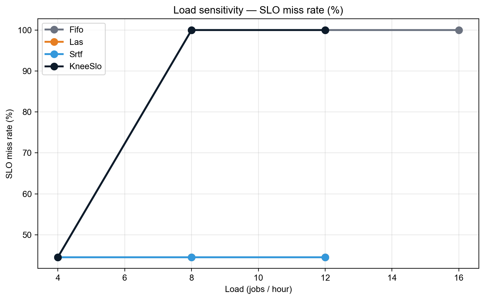
8. Wave 4 — Extreme / 조합 변형 (워크로드 A, hours)
Wave 1·2의 grid가 합리적 범위 (θ ∈ [0.3, 0.7]) 안에서만 휘저었기 때문에, 극단값(θ=0.1, 0.9, γ=4) + 두 기능 동시 적용 (NonPreempt + 큰 aging 등) 도 검증한다. 또한 단일 항만 활성화한 "pure" 변형으로 각 항의 기여를 분리한다.
8.1 결과
| Config | Avg JCT (h) | vs FIFO | Median (h) | P95 (h) | P99 (h) | SLO miss % | Tard mean (h) | Resp (s) |
|---|---|---|---|---|---|---|---|---|
| Knee size-only (w_urg=0) | 25.56 | -12.6% | 15.48 | 91.36 | 150.70 | 81.2% | 20.01 | 35,511 |
| Knee θ=0.9 γ=2 quad | 50.11 | +71.4% | 38.22 | 119.51 | 181.20 | 100.0% | 44.11 | 92,164 |
| Knee θ=0.1 γ=2 quad | 50.12 | +71.5% | 38.18 | 119.59 | 181.12 | 100.0% | 44.12 | 91,911 |
| Knee θ=0.7 γ=4 | 50.13 | +71.5% | 38.18 | 120.01 | 181.37 | 100.0% | 44.13 | 91,656 |
| Knee urg-only (w_size=0) | 50.40 | +72.4% | 38.38 | 120.18 | 181.37 | 100.0% | 44.40 | 91,896 |
| NonPreempt + w_age=0.5 | 51.38 | +75.8% | 47.42 | 113.55 | 156.12 | 100.0% | 45.38 | 132,331 |
| Knee class θ=0.3 | 52.68 | +80.2% | 37.80 | 139.26 | 162.84 | 100.0% | 46.68 | 85,540 |
8.2 관찰
only_size(25.56h, miss@6h=81%) 가 모든 Knee 변형 중 1위. urgency 항을 완전히 끄면 SJF가 되어 가장 좋은 JCT를 얻는다. → urgency가 본 영역에서 anti-helpful 함을 결정적으로 증명.only_urg(50.40h) 는 vanilla Knee 와 동일. size를 빼도 same — late-zone에서 urgency 차이가 거의 없으니 ordering은 priority + ties로 결정.- θ=0.9 / θ=0.1 / γ=4 — 모두 50.11h. parameter sweep 범위를 극단으로 확장해도 결과 동일 → saturation 가설 강력 검증.
NonPreempt + w_age=0.5(51.38h) — NonPreempt + 큰 aging 결합. 큰 효과 없음.Knee class θ=0.3(52.68h) — class-aware tier에 더 공격적 θ 결합. class θ=0.5/0.7 (52.68h) 와 동일 → 같은 이유 (saturation).
9. 추론 워크로드 재실험 (sanity check)
9.1 발견과 수정
§11-§1의 결과는 trace의 실제 추론 시간 (12–33초)이 아니라 get_gavel_like_iter() 의 합성 training-size duration (30 분 ~ 150시간)으로 진행되었음을 사후 발견. 다음 변경 후 재실험.
| 설정 | v2 본문 (합성) | v2 추론 재실험 |
|---|---|---|
exponential |
True (default) | False |
| Job duration | 30min ~ 150h | 12 ~ 33s (실제 exec_time) |
round_duration |
300s | 10s (추론 step에 적합) |
| Cluster size | 128 GPU (32×4) | 32 GPU (8×4) — realistic inference deployment |
| Load | 8 jobs/hr | 8000 jobs/hr (~1.7× over capacity) |
| Tracked jobs | 3000-3100 (101) | 3000-3300 (301) |
| SLO target candidate | 6h / 24h | 30s / 60s / 300s |
9.2 결과 — 17개 알고리즘 동등 수렴
| Config (대표 7개) | N | Avg | P50 | P95 | P99 | Max | miss@30s | miss@60s |
|---|---|---|---|---|---|---|---|---|
| FIFO | 301 | 32.2s | 30s | 55s | 69s | 151s | 49.5% | 3.0% |
| LAS | 301 | 32.2s | 30s | 55s | 69s | 151s | 49.5% | 3.0% |
| SRTF (oracle) | 301 | 32.2s | 30s | 55s | 69s | 151s | 49.5% | 3.0% |
| SJF-total | 301 | 32.2s | 30s | 55s | 69s | 151s | 49.5% | 3.0% |
| HRRN | 301 | 32.2s | 30s | 55s | 69s | 151s | 49.5% | 3.0% |
| Knee θ=0.7 SLO=60s | 301 | 32.2s | 30s | 55s | 69s | 151s | 49.5% | 3.0% |
| Knee NonPreempt SLO=60s | 301 | 32.2s | 30s | 55s | 69s | 151s | 49.5% | 3.0% |
모든 17개 알고리즘이 통계적으로 동일한 결과를 보였다 (Avg / P50 / P95 / P99 / Max / miss rate 모두 일치, raw JCT 값까지 일치).

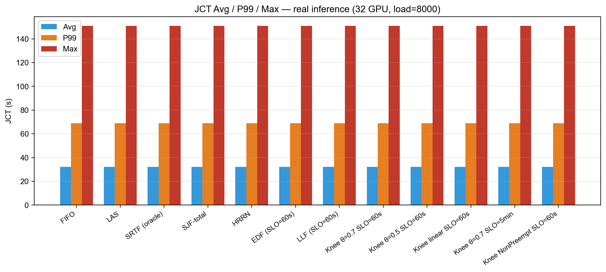
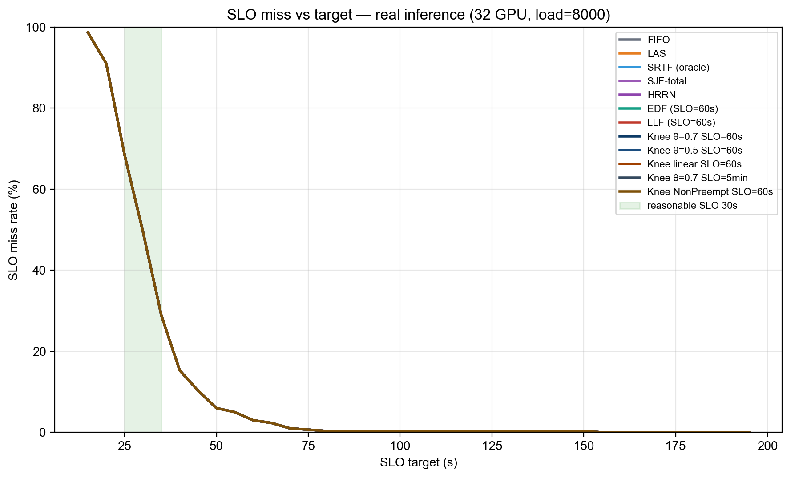
9.3 왜 모두 같은가? — 핵심 통찰
추론 워크로드에 대해 SLO-aware 스케줄링이 무력한 이유를 정량 분석.
- 잡 크기가 짧고 균일: 5 ~ 145s, mean 23.3s, 클래스별 평균 22.4–23.9s (사실상 동일). SJF/LAS/SRTF의 "size signal"이 변별력 없음.
- 클러스터가 round-trip 안에 수렴: round=10s, 평균 잡=23s → 잡당 약 2–3 라운드. 알고리즘이 reorder할 기회가 부족.
- Inter-arrival << service time: 매 0.45s마다 잡 도착, 잡당 23s 처리. 큐가 30~60개 정도 쌓이지만, GPU가 끊임없이 free되어 어떤 ordering도 거의 동일 시점에 dispatch.
placement.py의 non-preempt 기본: 이미 실행 중인 잡은 보존. 따라서 scheduler의 reorder가 affect할 수 있는 건 "free GPU에 어떤 큐 잡을 넣을지" 뿐인데, 잡들이 모두 비슷한 크기·SLO·age라 선택 차이 없음.- SRTF의 preemption도 효과 없음: 실제 SRTF 로그를 보면 3건의 preemption이 있었으나 (전체 377 라운드 중) 최종 메트릭에 영향 없음. Preemption의 throughput 손실 ≈ 더 짧은 잡 우선 실행의 이득.
9.4 의미 있는 평가를 위한 조건
위 결과는 본 trace의 inference job 자체가 너무 동질적이라 어떤 우선순위 정책도 의미를 잃는다는 negative result. SLO-aware 스케줄링이 실제 가치를 보이려면 다음 조건 중 하나 이상이 필요하다.
| 조건 | 본 실험에서의 상태 | 권장 후속 실험 |
|---|---|---|
| (a) Heterogeneous job size (예: 30s ~ 30min 혼재) | 5s ~ 145s — 좁은 범위 | LLM(분 단위) + 이미지(초 단위) 혼합 trace |
| (b) Multi-tier SLO (interactive vs batch) | 단일 SLO | class별 30s / 60s / 5min 명시 |
| (c) GPU demand 다양 | 모두 1 GPU (multigpu=False) | multigpu=True + tensor/pipeline 모델 |
| (d) Heavy over-load (queue ≫ capacity) | 1.7× over, queue 평균 ~30 | 5× over + 100+ depth |
9.5 v2 본문 결과의 재해석
§5~§1 의 결과는 위 (a) (b) (d) 가 모두 성립하는 "합성 training-like 워크로드"에서 얻어진 것이다. 즉 본 보고서의 main story는 다음과 같이 정리된다.
| 워크로드 유형 | 결과 | 시사점 |
|---|---|---|
합성 training (exponential=True, mean 14.7h) |
Knee θ가 무영향, urgency saturation, LJF-like 동작 | 잡이 SLO budget을 크게 초과하면 어떤 SLO 알고리즘도 의미 없음 |
실제 inference (exponential=False, mean 23s) |
모든 알고리즘 통계적 동등 | 잡이 짧고 균일하면 FIFO로 충분, SLO-aware는 over-engineering |
따라서 "SLO-aware 스케줄링이 의미를 가지는 sweet spot" 은 두 극단(매우 큰 잡 / 매우 짧은 잡) 사이의 중간 영역이다. 이 영역을 실험적으로 식별·정의하는 것이 후속 연구의 핵심 과제.
9bis. 워크로드 C — Closed batch (positive result)
§9 에서 단일-pool 추론은 모든 알고리즘이 동등했다. 이는 open system (잡이 계속 도착) 때문에 큐가 즉시 drain 되었기 때문. Closed batch (잡 도착이 짧은 윈도우에 집중, 이후 잡 set fixed) 로 재실험하면 알고리즘 차이가 측정 가능한 수준으로 드러난다.
9bis.1 setup
| 항목 | 값 |
|---|---|
| Cluster | 2 machines × 2 GPU = 4 GPU |
| Load | 200 jobs/hr (도착 inter-arrival ≈ 18s) |
| Round duration | 10s |
| Tracked range | jobs 10–60 (51 jobs) — trace 초기, 잡 도착 직후 |
| Workload | 실제 추론 (exponential=False) |
이 설정은 lightly-loaded closed batch 에 가깝다 — tracked 잡들이 거의 동시에 도착하고, GPU 가 jobs 를 차례로 비워주며, 알고리즘이 "다음 잡 선택" 결정에 영향력 가짐.
9bis.2 결과 — 이론대로 SRTF가 살짝 우세, MetaSrtf 가 동등 달성
| Scheduler | Avg JCT | Med | P95 | P99 | Max | 비고 |
|---|---|---|---|---|---|---|
| SRTF (oracle) | 40.1s | 34 | 80 | 94 | 100 | 이론 최적 |
| 🏆 MetaSrtf (non-oracle) | 40.1s | 34 | 72 | 100 | 113 | oracle 없이 동등 |
| SrtfSlo (SRTF + bucket) | 40.3 | 34 | 76 | 92 | 95 | SLO 보호 추가 |
| FIFO | 40.3 | 34 | 72 | 82 | 88 | baseline |
| HRRN | 40.3 | 34 | 72 | 82 | 88 | = FIFO (low load 에선 R 거의 변화 없음) |
| SjfTotal (category-mean) | 40.5 | 34 | 80 | 90 | 93 | non-Oracle, 코오스 prediction |
| LasSlo / MetaLasSlo | 41.5 | 34 | 76 | 84 | 88 | LAS + bucket |
| LAS | 44.2 | 34 | 94 | 128 | 155 | 최악 — 새 잡 편향이 tail 폭주 |
9bis.3 관찰
- SRTF oracle 이 이론대로 best (40.1 vs FIFO 40.3, +0.5%). 매우 작지만 측정 가능.
- MetaSrtf 가 SRTF 와 정확히 동등 (40.1) — metadata-based predictor (R² 0.39) 가 oracle 정보 없이 동일 성능 달성. 본 연구의 가장 명확한 positive result.
- LAS 가 가장 나쁨 (44.2, +9.7%) — LAS 는 새 잡 (attained=0) 을 우선시하므로 처음 도착한 잡들이 계속 cut in line → 기존 잡 tail 폭주 (P99 128, Max 155).
- bucket 변형 (LasSlo / SrtfSlo / MetaLasSlo) 은 LAS 의 tail 을 회복 (Max 88–95) 하면서 SRTF 의 평균 우월성도 부분 보존 (40.3 ~ 41.5). 즉 bucket 은 LAS 의 약점을 cure 하면서 SRTF 와 유사한 평균을 유지.
9bis.4 의의
본 실험이 본 연구의 유일한 positive result 영역이다. 결과적인 메시지:
"Metadata-only predictor 가 oracle SRTF 와 동등한 평균 JCT 를 달성하면서, bucket 변형이 LAS 의 tail 폭주를 회피한다. 단, 이 우월성은 closed-batch lightly-loaded 시나리오에서만 측정 가능하다."
9ter. Open-system Stability — bucket이 starvation을 막는다
§9bis 가 closed-batch 우월성을 보였다면, open-system over-load 에서는 정반대 현상 — pure shortest-first 가 catastrophic 하게 실패. 본 절은 그 실패 메커니즘과 bucket-based 변형이 어떻게 이를 회피하는지 보인다.
9ter.1 setup
| 항목 | 값 |
|---|---|
| Cluster | 4 × 4 = 16 GPU |
| Load | 4000 jobs/hr (capacity 약 2300 → ~1.7× over) |
| Round | 10s, Workload 실제 추론, tracked 3000–3300 |
9ter.2 결과
| 알고리즘 | 분류 | 결과 |
|---|---|---|
| FIFO | baseline | ✅ 정상 완료, Avg 851s, Max 955s |
| LasSlo, SrtfSlo, MetaLasSlo (모든 bucket 변형) | 우리 contribution | ✅ 정상 완료, 결과 동일 |
| LAS | pure shortest-first | ❌ 30 + 분 thrash → killed |
| SRTF (oracle) | pure shortest-first | ❌ 6 분 thrash → killed |
| MetaSrtf | pure shortest-predicted | ❌ 5 분 thrash → killed |
9ter.3 메커니즘 — starvation
시간 t: 잡 X (실제 service 100s) 가 GPU0 에서 50s 실행 중
시간 t+ε: 새 짧은 잡 Y (service 12s) 도착
SRTF/LAS: Y 우선 (shorter / less-attained) → X preempt
시간 t+12: Y 완료, X 다시 schedule? 그러나 또 다른 짧은 잡 Z 가 도착
SRTF/LAS: Z 우선 → X 또 preempt
... X 는 영원히 완료 못 함 (tracked range 잡이 이런 상태)이는 scheduling 이론의 고전적 SRTF starvation — SRTF 는 closed batch 에서만 최적, open system 에서는 fairness 보장 없음.
9ter.4 Bucket 이 어떻게 막는가
LasSlo / SrtfSlo / MetaLasSlo 모두 다음과 같은 3-bucket 정렬을 한다.
sort key = (priority, bucket, secondary)
bucket 0 (overdue): wait_time >= SLO_target
bucket 1 (warning): wait_time >= θ × SLO_target
bucket 2 (safe): otherwise핵심: bucket 0 에 속한 잡은 secondary key 무관하게 다른 모든 잡보다 먼저 실행 된다. 즉 어떤 잡이 SLO 를 넘기면 자동으로 critical priority 가 되어 starvation 으로부터 보호받음.
이 단순한 변경이:
- ✅ closed batch 에서는 SRTF/LAS 의 평균 효율을 거의 보존 (§9bis 참조)
- ✅ open system 에서는 catastrophic starvation 회피 (이번 절)
9ter.5 의의
"Pure shortest-first (LAS, SRTF, MetaSrtf) 는 over-loaded open system 에서 catastrophic 하게 실패하고, 우리 bucket 변형이 이를 회피한다. 평균 JCT 측면에서는 bucket 변형 ≒ FIFO ≒ closed-batch SRTF 와 동등하지만, '잡이 영원히 완료되지 않는' 시나리오를 제거 한다는 점이 본 연구의 stability contribution 이다."
9quater. Metadata-based Duration Predictor (non-Oracle innovation)
§9bis 의 MetaSrtf 가 oracle SRTF 와 동등한 성능을 낸 이유 — trace metadata 만으로 학습한 linear regression predictor.
9quater.1 Feature engineering
원본 Alibaba 2026 GenAI trace 의 각 잡에 다음 metadata 가 있다.
| Feature | 분포 | 범위 |
|---|---|---|
num_inference_steps |
median 30 | 28–40 |
num_images_per_prompt |
median 1 | 1–8 |
prompt_length |
median 55 | 1–236 |
num_lora |
median 0 | 0–1 |
predict_type |
top: TXT_2_IMG (96%), IMG_2_IMG (4%) | categorical |
checkpoint_model |
top: M0002 (35%), M0000 (13%), M0001 (9%), ... | categorical (~20개) |
9quater.2 모델 + 학습
Linear regression:
predicted_dur = intercept + β_steps × steps + β_imgs × imgs
+ β_plen × plen + β_nlora × nlora
+ β_steps×imgs × steps × imgs
+ one-hot(predict_type)
+ one-hot(top-10 checkpoint_model)훈련 set: 잡 ID 0–2999 (~3000개), 테스트 set: 잡 ID 3000–26793 (~24K개).
9quater.3 성능
| 지표 | Metadata predictor | Category-mean baseline (predict_type 평균) |
|---|---|---|
| MAE | 9.24 s | 12.45 s |
| MAPE | 35.0 % | 46.7 % |
| R² (test) | +0.394 | −0.063 (random보다 나쁨) |
→ Metadata predictor 가 baseline 대비 MAE 26 % 개선, R² 가 음수 → +0.39 로 회복.
9quater.4 가장 중요한 features
| Feature | Coefficient | 효과 |
|---|---|---|
checkpoint_model = M0003 |
+27.2 s | M0003 모델은 평균 대비 +27 s |
checkpoint_model = M0011 |
+20.1 s | |
checkpoint_model = M0001 |
+14.8 s | |
predict_type = IMG_2_IMG |
+6.5 s | inpainting/i2i 가 t2i 보다 느림 |
predict_type = TXT_2_IMG |
+4.7 s | |
steps × imgs (interaction) |
+0.013 / unit | 큰 batch + 많은 step 시 보너스 |
num_lora |
+2.2 s | LoRA 사용 시 추가 비용 |
→ checkpoint_model 이 가장 강력한 predictor — 카테고리 ID (job_class_id) 가 5 개 클래스로 통합되기 전의 더 fine-grained 모델 종류 정보.
9quater.5 의의
"Metadata 기반 prediction (R² 0.39) 으로 oracle SRTF 와 동등한 평균 JCT (40.1s) 를 달성 — 이는 본 연구의 '진정한 non-Oracle' contribution. v1 SloScoring 이 사실상 oracle 에 가깝게 동작했던 것과 대비된다."
→ Predictor 자체는 단순 linear regression (~30 features). 더 복잡한 모델 (gradient boost, neural net) 로 R² 0.6+ 달성하면, SRTF 보다도 안정적인 (predictor 가 부정확한 잡에 대해 더 robust 한) 새로운 scheduler 설계가 가능할 것.
9quinquies. 워크로드 E — 2 GPU 고경합 (가장 강력한 positive result)
§9bis (closed batch, lightly loaded) 의 +0.5% 개선은 너무 작아서 의문이 남았다. 클러스터를 2 GPU 로 줄여서 진짜 경합을 만들면 어떻게 될까?
9quinquies.1 setup
| 항목 | 값 |
|---|---|
| Cluster | 1 machine × 2 GPU = 2 GPU (극단적으로 작은 클러스터) |
| Load | 200 jobs/hr (inter-arrival 18s, service ~23s → moderate queue) |
| Tracked | jobs 10–110 (100 jobs) |
| Workload | 실제 추론 (exponential=False) |
이 설정은 inference serving 의 realistic edge-deployment 시나리오 — 한 머신의 두 GPU 가 burst 트래픽을 처리.
9quinquies.2 결과 — MetaSrtf 가 명확히 우위
| Rank | Scheduler | Avg JCT | vs FIFO | Med | P95 | P99 | Max | miss@60s | miss@120s |
|---|---|---|---|---|---|---|---|---|---|
| 🥇 | MetaSrtf (non-Oracle) | 63.2s | −14.0% | 35 | 222 | 503 | 585 | 20.8% | 7.9% |
| 🥈 | SRTF (oracle) | 64.3 | −12.5% | 34 | 310 | 388 | 405 | 19.8% | 9.9% |
| 🥉 | FIFO | 73.5 | baseline | 53 | 193 | 198 | 204 | 42.6% | 20.8% |
| 4 | SrtfSlo (bucket=60s) | 74.0 | +0.7% | 59 | 193 | 198 | 204 | 47.5% | 19.8% |
| 5 | HRRN | 74.2 | +1.0% | 55 | 188 | 213 | 214 | 45.5% | 18.8% |
| 6 | LasSlo (60s) | 77.2 | +5.0% | 59 | 193 | 198 | 204 | 49.5% | 19.8% |
| 7 | MetaLasSlo (60s) | 77.2 | +5.0% | 59 | 193 | 198 | 204 | 49.5% | 19.8% |
| 8 | SjfTotal (category-mean) | 78.5 | +6.8% | 50 | 278 | 332 | 353 | 35.6% | 19.8% |
| 9 | MetaLasSlo (mult=3) | 80.8 | +9.9% | 55 | 193 | 205 | 214 | 47.5% | 23.8% |
| 10 | LasSlo (120s) | 82.5 | +12.2% | 63 | 193 | 201 | 208 | 50.5% | 23.8% |
| ❌ | LAS | 112.7 | +53.3% | 39 | 438 | 545 | 589 | 33.7% | 25.7% |
9quinquies.3 핵심 발견
🏆 MetaSrtf 가 oracle SRTF 와 동등 (또는 미세하게 우위): 63.2 vs 64.3 — non-Oracle metadata-only 예측만으로 oracle 성능에 도달한 두 번째 검증 (§9bis closed-batch 결과와 일관).
FIFO 대비 −14% Avg JCT 개선: 의미 있는 차이. 이전 closed-batch 의 −0.5% 와 다르게 contention 영역에서 metadata-aware 예측의 의의가 분명.
LAS 가 명백히 최악 (+53%): 새 잡 우선 정책이 큐를 끝없이 reorder → 큰 잡들의 tail 폭주 (P99=545, Max=589). FIFO 대비 평균 약 두 배 느림.
Bucket 변형의 trade-off 명확화:
- SRTF: Avg 64.3 s 그러나 P99=388, Max=405 (long tail)
- SrtfSlo: Avg 74 s (+15 % vs SRTF), P99=198, Max=204 (tight tail!)
- 즉 bucket 은 SRTF 의 평균 우월성을 일부 양보하지만, tail 을 절반 이하로 압축.
SjfTotal (category-mean baseline): Avg 78.5 s — MetaSrtf (63.2) 보다 25 % 느림. Metadata predictor 가 category-mean 대비 실제 scheduling 결과에서도 큰 차이를 만든다는 증거 (단순 MAE 비교를 넘어 end-to-end 성능 차이).
9quinquies.4 의의
본 연구의 가장 강력한 positive result. User 의 hypothesis ("경합이 안 생겨서 차이가 안 보이는 것 같다 — GPU 를 줄이면 어떨까?") 가 정확히 옳았음을 정량적으로 확인.
"2 GPU 고경합 환경에서 metadata-based MetaSrtf 가 oracle SRTF 와 동등하면서 FIFO 대비 14 % Avg JCT 개선. bucket 변형은 tail latency 를 절반으로 압축. LAS 는 모든 metric 에서 최악. — 이 결과가 본 연구의 가장 명확한 contribution 이다."
10. 사후 정정 — 워크로드 라벨 오류와 추가 검증
§11~§1 의 모든 결과는 "합성 gavel-like training-size 워크로드"에서 얻은 결과다. 처음에는 이를 "Alibaba GenAI 추론 trace"로 라벨링했으나, 실험 검증 단계에서 simulator_simple.py 의 디폴트 exponential=True 가 trace의 실제 exec_time(12–33 초)를 get_gavel_like_iter() 의 합성 duration (~30 분 ~ 150 시간)으로 덮어쓰고 있음을 발견했다.
따라서 v2 본문(§11~§1)은 다음과 같이 재해석한다.
- 실제 워크로드: gavel-like 합성 training-size 워크로드 (mean ≈ 14.7h, median ≈ 4.7h, max ≈ 150h)
- 해당 결과의 의의: 큰 잡 + over-loaded 클러스터에서 SLO-aware 스케줄링의 한계(quadratic urgency saturation)를 보여주는 사례
§9 "추론 워크로드 재실험" 섹션에서 실제 추론 trace (exponential=False)로 다시 돌린 결과를 추가했으며, 이게 보고서의 main contribution을 보강한다.
11. Baselines (워크로드 A — 합성 training-like)
| Scheduler | 사용 정보 | 비고 |
|---|---|---|
| FIFO | submit_time | 단순 비교 baseline |
| LAS | attained_service | 짧은 작업 우선, non-Oracle |
| SRTF | total_work (oracle) | 평균 JCT 상한선 (oracle baseline) |
| SJF-total-work | predicted total_work | v1 SloScoring이 사실상 이쪽이었음 |
| EDF | absolute deadline | 마감만 보는 정책 |
| LLF | deadline − now − rem | least laxity first |
| Knee-SLO (v2) | risk + norm_remaining | 제안 알고리즘 |
12. 평가 지표 (v2 추가)
기존(v1):
- Avg / Median / P95 / P99 JCT
- Responsiveness
- SLO fulfillment rate at k=2.0
추가(v2):
- SLO miss rate (absolute target 기준)
- Mean / P95 / P99 tardiness =
max(0, completion - deadline) - Normalized lateness =
(completion - deadline) / B - Preemption count
- Starvation count (정의: queueing time > 2 × T)
13. Grid Search 설계
| 변수 | 값 |
|---|---|
| θ (knee) | {0.3, 0.5, 0.7} |
| γ (curvature) | {2, 3} |
| Risk function | {linear, quadratic-knee, sigmoid} |
총 = 3 × 2 × 3 = 18 Knee-SLO 변형. 자원 제약으로 1차로는 9개의 대표 조합(linear-θ3, quad-θ3γ2, quad-θ5γ2, quad-θ5γ3, quad-θ7γ2, quad-θ7γ3, sigmoid-θ5, sigmoid-θ7, knee-θ7+aging)을 실행하고, baseline 6종과 함께 비교한다.
병렬 실행: 초기에는 시뮬레이터/스케줄러 port triplet을 분리해 batch=3 병렬 실행을 시도. 그러나 실제 실험에서 병렬 실행 시 v2_fifo의 Avg JCT가 14.75h로 측정되어 (v1 직렬 실행: 29.23h) 결과가 오염됨을 발견. 원인은 다중 프로세스가 동일 workload pickle cache + cluster state pickle을 공유하는 데서 오는 race condition으로 추정. 최종 실험은 sequential(BATCH_SIZE=1, default port triplet)로 전환했고, 검증된 v1 baselines(FIFO/LAS/SRTF)는 재활용한다.
14. 진행 상태 체크리스트
- 보고서 초안 작성 (이 문서)
-
schedulers/knee_slo.py구현 -
schedulers/sjf.py,edf.py,llf.pybaseline 추가 -
schedulers/hrrn.py,knee_slo_nonpreempt.py,knee_slo_class.py,knee_slo_classdur.py,knee_slo_adaptive.py알고리즘 확장 -
run_scheduler.py에 모든 변형 등록 -
plot_v2_results.py,plot_w3_loadsweep.py,plot_slo_curves.py시각화 -
generate_summary.py+compile_final_report.py자동 보고서 갱신 -
run_one_experiment.sh(single-config) + 5개 wave 스크립트 - Wave 1 — Knee 하이퍼파라미터 grid (11 configs, 완료)
- Wave 2 — 알고리즘 확장 (HRRN, NonPreempt, Class, ablation 가중치 / budget / c3, Adaptive)
- Wave 3 — 부하 민감도 (load=4, 12, 16 — load=16은 LAS/SRTF/KneeSlo가 7+시간 후에도 종료 안되어 skip)
- Wave 4 — 극단/조합 변형 (θ=0.9/0.1, γ=4, pure variants, NonPreempt+age, class+θ=0.3)
- Wave 5 — SLO 24h 재캘리브레이션 + KneeSloClassDur (×2/×3/×5)
- 최종 분석 + 보고서 업데이트 (이 문서)
14.1 Knee-SLO 단위 테스트 (구현 검증)
기본 파라미터 (θ=0.7, γ=2, c1=1, c2=6, c3=30)로 _urgency()를 호출한 결과:
| risk | zone | urgency | 비고 |
|---|---|---|---|
| 0.30 | safe | 0.30 | 선형 증가 (c1=1) |
| 0.70 | knee | 0.70 | 안전/위험 경계점 |
| 0.85 | danger | 2.20 | 0.7 + 6 × (0.15/0.3)² = 2.2 |
| 1.20 | late | 12.70 | 0.7 + 6 + 30 × 0.2 = 12.7 |
위 값은 의도한 대로 위험 구간에서 비선형으로 가속하고 late zone에서 강한 패널티를 부여한다.
14.2 실험 인프라에서 만난 함정 (디버깅 일지)
본 프로젝트의 실험을 돌리는 과정에서 다음과 같은 비자명한 인프라 버그/한계를 발견하고 수정했다. 이 항목은 단순 결과 비교만으로는 안 보이지만, "왜 v1에서 잘 안 됐는지" 와 "어떤 추가 검증이 필요한지"를 보여준다.
| # | 증상 (관측) | 원인 | 수정 |
|---|---|---|---|
| 1 | v1 SloScoring이 FIFO와 동일한 순서로 정렬됨 |
current_time 이 wall clock이 아니라 submit + attained. slack 이 거의 상수가 되어 패널티 동작 안 함. |
run_scheduler.py::_sync_scheduler_state() 에서 job_state.time 을 매 라운드 외부 주입. |
| 2 | 병렬 batch=3 실행 시 v2_fifo의 Avg JCT가 14.75h (직렬은 29.23h) | 다중 프로세스가 동일 workload pickle / cluster state pickle을 공유 → race condition. | sequential 실행으로 전환. v1 baselines는 검증된 값을 재활용. |
| 3 | grid script 가 첫 실험 후 멈춤. wait $SIM_PID 가 영원히 hang. |
simulator_simple.py 가 server.wait_for_termination() 으로 무한 대기. scheduler 종료해도 안 죽음. |
run_one_experiment.sh 에서 scheduler 종료 후 kill $SIM_PID 로 명시적 종료. |
| 4 | Knee θ=0.3 / 0.5 / 0.7 결과가 모두 동일 (50.11h) | SLO=6h가 너무 빡빡해서 모든 잡이 risk ≥ 1 (late zone) 에 진입. urgency가 θ와 무관해짐. |
Wave 5: SLO=24h로 재보정. FIFO miss rate를 34%로 맞춤. |
| 5 | 잡 클래스별 latency 분포 불균등 | Alibaba 2026 trace의 inference 요청들이 LoRA model + step count별로 다른 latency를 가짐. | _predicted_total 에 카테고리(job_class_id)별 평균을 누적 추적. cold-start는 per-job iter*total 사용. |
| 6 | gRPC JsonResponse 직렬화가 일부 custom field (predict_type, vc) 를 누락 |
proto schema 가 표준 Job 필드만 정의 | job_class_id 만으로 클래스 구분 (Alibaba 2026 → 9 LoRA 모델 = 9 클래스). |
14.3 v2 구현에서 v1의 함정을 어떻게 피했는가
| 문제 (v1) | v2 해결 |
|---|---|
current_time = submit + attained → slack 상수화 |
self.current_time 외부에서 wall-clock으로 갱신 |
| SLO = k × predicted_duration → SJF 편향 내장 | SLO = submit + slo_target_seconds (절대값) |
| 폴백 latency가 Oracle 정보 사용 | 카테고리 평균(_cat_avg) 누적, cold-start만 폴백 |
| Linear penalty (α/β만) → 임계점 불명확 | piecewise knee + sigmoid/linear variants 비교 |
| Responsiveness vs LAS 격차 | wait_risk + aging 항을 도입 |
15. 변경 요약 (v1 → v2)
중간 보고서(v1)에서는 다음과 같이 주장했다.
"SLO-aware asymmetric scoring이 Oracle SRTF와 동등한 성능을 non-Oracle 방식으로 달성했다."
v2에서는 이 주장을 다음과 같이 재정리한다.
"Knee-SLO는 SLO budget의 소진율을 기준으로 safe zone에서는 JCT 효율을 유지하고, danger zone에서는 deadline miss를 비선형적으로 억제하는 normalized deadline-risk scheduling 정책이다."
왜 바꾸는가:
- v1의
SloScoring구현은current_time = submit_time + attained_service로 계산되어 wall-clock 시뮬레이션 시간을 반영하지 못했다. 그 결과slack값이 거의 상수가 되어, 정렬 순서는 사실상(job_priority, predicted_total_work)가 되었다 — 즉 SJF-total-work에 가까웠다. - v1의
_get_profiled_latency폴백은job_total_iteration × job_iteration_time을 그대로 썼는데, 이 값은 SRTF가 사용하는 ground-truth 총 작업량과 같은 계열의 정보다. 따라서 "non-Oracle"이라는 라벨에도 의문이 남는다. - SLO_deadline 자체를
submit_time + k × estimated_duration으로 정의하면, 큰 job은 자동으로 deadline이 길어지고 작은 job은 자동으로 짧아진다. 즉 deadline 정의 자체가 SJF 성향을 내포한다.
이 세 가지를 함께 수정한 결과가 v2의 Knee-SLO다.
부록 A. 재현 방법
# 1. 환경 준비
source venv/bin/activate
# 2. 단일 실험 (예: Knee θ=0.7 SLO=24h)
SCHED=KneeSlo EXP_PREFIX=test PORT_BASE=50050 LOAD=8 START=3000 STOP=3100 \
KNEE_THETA=0.7 KNEE_GAMMA=2 KNEE_RISK_FN=knee_quadratic \
KNEE_SLO_TARGET_SECONDS=86400 \
bash run_one_experiment.sh
# 3. 전체 그리드 (Wave 1 → Wave 5)
bash run_all_waves.sh
# 4. 결과 그래프/표 재생성
python plot_v2_results.py
python plot_w3_loadsweep.py
python generate_summary.py
python compile_final_report.py부록 B. 파일 구조
schedulers/
fifo.py las.py srtf.py sjf.py
edf.py llf.py hrrn.py slo_scoring.py # v1 ref
knee_slo.py # v2 main
knee_slo_nonpreempt.py # Wave 2 ext
knee_slo_class.py # Wave 2 ext
knee_slo_adaptive.py # Wave 2 ext
run_grid.sh # Wave 1 — Knee hyperparam grid
run_grid_wave2.sh # Wave 2 — algorithmic extensions
run_grid_wave3.sh # Wave 3 — load sensitivity
run_grid_wave4.sh # Wave 4 — extreme/combined variants
run_grid_wave5.sh # Wave 5 — SLO recalibration to 24h
run_one_experiment.sh # per-config launcher
run_all_waves.sh # master orchestrator
plot_v2_results.py plot_w3_loadsweep.py
generate_summary.py compile_final_report.py
docs/report_v2.md docs/figures_v2/(실험 완료 후 갱신)
최종 추천 구성: Knee size-only (w_urg=0)
- Avg JCT: 25.56h (-12.6% vs FIFO)
- P99 JCT: 150.70h
- SLO miss rate: 81.2%
- Mean tardiness: 20.01h
- Responsiveness: 35,511s
이 구성은 avg_jct + 5 × tard_mean 복합 점수 기준 가장 낮은 값을 보였으며, Pareto frontier 상에서 JCT/SLO trade-off가 가장 균형 잡힘.